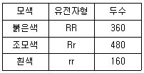
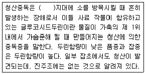

축산기사 (2012-03-04 기출문제)
1과목: 가축육종학
1. 변이의 크기를 측정하는 방법으로 적합하지 못한 것은?
- 범위
- 분산
- 표준편차
- 백분율
(정답률: 78%)

2. 고기소에서 3품종종료교배를 하는 경우 송아지의 이유시 체중에 있어 순종 암소에서 태어난 교잡종 소아지의 잡종 강세율이 9.5%이고, 이들 교잡종 어미소에서 태어난 교잡종 송아지의 잡종 강세율이 24.5%라고 하면 교잡종 송아지의 개체 잡종 강세율은?
- 9.5%
- 15.0%
- 17.0%
- 24.5%
(정답률: 66%)
3. 채란 양계를 위한 난용종의 선발 요건이 아닌 것은?
- 다산일 것
- 폐사율이 적을 것
- 몸집을 크게 할 것
- 사료 이용성이 좋을 것
(정답률: 87%)
4. 가축 형질의 변이에 관한 설명으로 틀린 것은?
- 동일한 유전적 조성을 가진 가축이라도 환경이 다르면 상이한 변이를 나타낸다.
- 교잡에 의한 변이의 형성은 유전자 변화로 인해 새로운 유전자를 형성하기 때문이다.
- 유전 여부에 따라 가축의 변이를 유전적 변이와 비 유전적 변이로 구분된다.
- 우량 변이를 발견하고 선발하는 육종과정에서 유전적 변이는 중요한 육종의 소재가 된다.
(정답률: 58%)
5. 멘델의 독립법칙에 의하여 분리되는 3형질을 가진 개체 AaBbCc와 Aabbcc인 개체가 교배하였을때 AaBbCc인 개체를 얻을 확률은? (단, A, B, C는 연관 되어있지 않음)(오류 신고가 접수된 문제입니다. 반드시 정답과 해설을 확인하시기 바랍니다.)
- 1/4
- 1/8
- 1/16
- 132
(정답률: 17%)
6. 다음 육우의 경제형질 중 유전력이 가장 높은 것은?
- 사료효율
- 도체율
- 배장근 단면적
- 이유시 체중
(정답률: 73%)
7. 다음 중 근교계수가 낮아지는 경우는?
- 어떤 개체의 부친과 모친간의 혈연관계가 가까운 경우
- 동형접합체의 비율이 증가하고, 이형접합체의 비율이 감소된 경우
- 가계도 추적시 공통선조의 수가 증가하는 경우
- 개체의 부모 간에 혈연관계가 거의 없는 경우
(정답률: 86%)
8. 야생토끼의 피하지방은 백색으로 백색유전자(Y)에 의해 황색 지방을 침착시키는 사료 내 크산토필을 파괴하는 효소를 만들기 때문이다. 황색지방 개체(yy)에게 크산토필이 함유되지 않은 사료를 급여하였더니 피하지방이 백색이 되는 것을 설명할 수 있는 것은?
- 유전자의 침투성 차이
- 유전자의 표현도 차이
- 유전자의 다면작용
- 유전과 환경의 상호작용
(정답률: 59%)
9. 18세기 동묵육종의 효시라고 불리는 영국의 이 육종가는 유종원리를 “like begets like"라고 하였는데 이 사람은 누구인가?
- H.Lewis
- F.Hopkins
- J.Gilbert
- R.Bakewell
(정답률: 59%)
10. 돼지이 도체형질을 조사하는 방법으로 초음파를 이용하여 측정하는 형질이 아닌 것은?
- 등지방두께
- 배장근단면적
- 도체율
- 근내지방도
(정답률: 82%)
11. 유전자 작용이 비슷하여 동일한 형질을 나타내는 독립유전자는?
- 동의유전자
- 보족유전자
- 조건유전자
- 억제유전자
(정답률: 82%)
12. 반성유전에 대한 설명으로 옳은 것은?
- Y-염색체에 존재하는 유전자에 의해 지배된다.
- X-염색체에 존재하는 유전자에 의해 지배된다.
- 상염색체에 존재하는 유전자에 의해 지배된다.
- 모든염색체에 존재하는 유전자에 의해 지배된다.
(정답률: 69%)
13. 다음 중 반복력의 계산이 어려운 것은
- 돼지의 산자수
- 소의 생시체중
- 양이 산모량
- 산차
(정답률: 56%)
14. 1000마리의 쇼트혼소가 아래와 같다고 할 때 붉은 모색에 대한 직접법의 유전자 빈도는?

- 0.4
- 0.5
- 0.6
- 0.84
(정답률: 77%)
15. 근교계수를 설명한 것 중 옳지 않은 것은
- 동형 접합 상태인 유전자 좌위의 비율
- 공통 선조가 갖고있는 유전자의 복제 확률
- 두 개체간 유전자형의 유사도
- 상동 염색체 상의 유전자가 동일전수유전자일 확률
(정답률: 44%)
16. 유전자 조성에서 DNA의 외가닥이 3′TACCGAGTAC5‵라고 할 때 이에 대응하는 DNA가닥은?
- 5′ATGGCTCATG3‵
- 3′ATCCGAGTAC5‵
- 3′AUGGCUCAUG5‵
- 5′AUGGCUCAUG3‵
(정답률: 77%)
17. 돼지의 등지방 두께를 개량하기 위하여 등지방 두께가 얇은 수퇘지를 구입하였다. 구입한 수퇘지의 등지방 두께는 2.1cm이었고 수퇘지 돈군의 평균은 2.8cm였다고 한다. 새끼돼지를 얻기 위해 선발되어 종부에 이용된 암퇘지들의 평균은 2.5cm였고, 암퇘지 돈군의 평균은 3.0cm였다고 한다. 등지방 두께이 유전력이 0.5라고 할 때 새끼돼지들에서 기대되어지는 등지방 두께는?
- 2.7cm
- 2.6cm
- 4.4cm
- 3.3cm
(정답률: 40%)
18. 성장률이라는 형질을 개량하고자 할 때 성장률 대신 체중이라는 형질에 대해 선발하여 성장률을 개량하는 선발 방법은?
- 간접선발
- 반복선발
- 순차선발
- 절단선발
(정답률: 81%)
19. 어떤 형질의 표현형분산 중에서 유전분산이 차지하는 비율을 의미하는 것은
- 유전력
- 육종가
- 반복력
- 유전상관
(정답률: 71%)
20. 돼지에서 개통을 조성하는 목적과 거리가 먼 것은?
- 실용돈과 종축의 제일성을 높이는데 도움을 준다.
- 계통구성원간의 혈연관계가 없어도 상관없다.
- 능력이 우수한 개체를 중심으로 계통을 조성한다.
- 계통간 교배에 의한 잡종강세의 효과가 보다 효과적으로 활용된다.
(정답률: 72%)
2과목: 가축번식생리학
21. 젖소에서 비외과적인 방법으로 배반포기의 수정란을 이식할 경우 가장 좋은 이식부위는?
- 자궁각
- 난관
- 자궁경관
- 난소
(정답률: 73%)
22. 동물에 따라 정소와 정소상체가 음낭(정소낭)에 의하여 몸에 매달려 있는 상태가 각각 다르다. 소의 정소와 정소상체가 어떤 상태를 매달려 있는가?
- 전배방향
- 후배방향
- 수직방향
- 수평방향
(정답률: 71%)
23. 다음 중 정소상체의 주요 기능이 아닌 것은?
- 정자의 생성
- 정자의 성숙
- 정자의 운반
- 정자의 저장
(정답률: 75%)
24. 난포자극 호르몬의 생리작용에 대하여 바르게 설명한 것은?
- 난포의 성장과 성숙을 자극한다.
- oxytocin의 분비를 자극한다.
- 성장호르몬 분비를 자극한다.
- 정자형성에는 관여하지 않는다.
(정답률: 81%)
25. 태반에서 분비되는 호르몬은?
- 갑상선자극호르몬 방출호르몬(T고)
- 임마혈청성 성선자극호르몬(PMSG)
- 테스토스테론(Testosterone)
- 황체형성호르몬(LH)
(정답률: 74%)
26. 소의 분만 직전에 일어나는 분만징후 중 틀리게 설명한 것은?
- 유방이 커지고 유즙이 비친다.
- 외음부가 충혈되고 종장된다.
- 점액성 분비물의 양이 감소된다.
- 미근부의 양쪽이 함몰되어 간다.
(정답률: 72%)
27. 정자의 운동에 필요한 에너지를 합성하는 부위는?
- 두부
- 경부
- 중편부
- 주부
(정답률: 77%)
28. 수소의 성성숙과 가장 관련성이 큰 호르몬은?
- 테스토스테론
- 프로제스테론
- 프로락틴
- 임마혈청성 성선자극르로몬
(정답률: 84%)
29. 성숙한 포유가축에서 정자형성이 가장 활발이 일어나는 최적의 온도는?
- 25℃
- 26~29℃
- 30~35℃
- 36~39℃
(정답률: 47%)
30. 유선관계의 발육이 시작되는 시기는 언제인가?
- 성성숙과 더불어
- 임신6개월 이후
- 분만전후
- 비유최성기
(정답률: 63%)
31. 전염성 번식장해를 일으키는 질병은?
- 자궁축농증
- 난소낭종
- 영구황체
- 브루셀라병
(정답률: 81%)
32. 소에 있어서 자궁내 출혈 혹은 발정에 이한 출혈이 외부로 나타나는 때는 발정주기 중 어느 시기에 해당하는가?
- 발정전기
- 발정기
- 발정후기
- 발정휴지기
(정답률: 65%)
33. 다음 중 갑상선 호르몬의 작용이 아닌 것은?
- 체성장
- 단백질의 합성
- 발육과 성숙
- 영양소의 산화
(정답률: 41%)
34. 계절번식 동물(특히 면양)의 성성숙에 대하여 가장 큰 영향을 미치는 요인은?
- 온도
- 영양상태
- 일조시간
- 정신적 요인
(정답률: 76%)
35. 홀스타인 암소의 번식 적령기의 평균 체중은?
- 100~200kg
- 200~300kg
- 300~400kg
- 400~500kg
(정답률: 71%)
36. 임상적 임신진단법에 속하지 않는 것은?
- 외진법(NR법)
- 직장검사법
- 자궁경관점액검사법
- 성선자극호르몬검출법
(정답률: 62%)
37. 포유동물에서 배란시기에 도달한 난자의 발생단계는?
- 원시생식세포
- 난원세포
- 제1차 난모세포
- 제2차 난모세포
(정답률: 47%)
38. 다음 중 뇌하수체 후엽에서 분비되는 호르몬은?
- 난포자극호르몬(FSH)
- 황체 호르몬(progesterone)
- 발정 호르몬(estrogen)
- 옥시토신
(정답률: 80%)
39. 소에서 수정란이 투명대로부터 탈출되는 시기는 배란 후 얼마인가?
- 4~5일
- 10~11일
- 16~17일
- 22~23일
(정답률: 58%)
40. 다음 중 가장 확실한 젖소의 발정 징후는?
- 승가를 허용한다.
- 큰소리로 운다.
- 비유가 감소한다.
- 식욕이 감퇴한다.
(정답률: 84%)
3과목: 가축사양학
41. 착유우에서 유기가 경과되어 건유기에 가까워지면 감소하는 우유성분은?
- 지방
- 단백질
- 유당
- 비타민
(정답률: 64%)
42. 단백질의 품질을 측정하는 생물가의 설명으로 맞는 것은?
- 가소화 단백질이 체단백질로의 이용가치
- 유사단백질이 체내 이용가치
- 에너지의 증체에 대한 이용률
- 가소화 영양소의 총 열량수준
(정답률: 75%)
43. 반추동물에서 제1위내 미생물의 주요작용에 대한 설명으로 옳지 않는 것은?
- 지방이 제1위 내에 들어가면 포화지방산에 수소가 떨어져 나와 불포화지방산이 된다.
- 반추동물의 태액에는 amylase가 전혀 없거나 조금 밖에 없으므로 탄수화물은 소화되지 않은 채 제1위로 들어간다.
- 제1위 내에 존재하는 미생물의 작용에 의하여 의하여 비타민 B군과 비타민K가 합성된다.
- 단백질이나 비단백태질소화합물의 일부는 제1위 내서 소화되지 않고 제4위나 소장에서 소화되기도 하지만 대부분은 미생물의 작용을 받아 아미노산이나 암모니아로 분해된다.
(정답률: 55%)
44. 비육우의 사양을 바르게 설명한 것은?
- 비육말기에 단백질을 많이 공급할수록 육질이 더 좋아진다.
- 비육중인 가축에게 수용성 비타민의 공급은 필수적이다.
- 대두박이나 옥수수를 많이 급여하면 체지방이 연해진다.
- 고기의 상품가치는 연지방이 많을수록 좋다.
(정답률: 69%)
45. 다음 중 필수 아미노산인 페닐알라신을 대치할 수 있는 것은?
- 타이로신
- 시스틴
- 프롤린
- 알라닌
(정답률: 65%)
46. 돼지의 미경산돈은 대개 강정사양의 효과가 크다. 다음 중 강정사양이란?
- 교배하기 전에 에너지 섭취량을 증가시켜 주는 것
- 교미전에 휴식시키는 것
- 시장에 출하하지 직전 비육하는 것
- 도살직전에 질식 및 급수를 중단하는 것
(정답률: 83%)
47. 유지율 3.5%인 우유 40kg을 FCM으로 환산하면?
- 33kg
- 35kg
- 37kg
- 39kg
(정답률: 73%)
48. 일반적으로 곡류의 가소화 조단백질 함량범위는?
- 0.3~0.5%
- 6~9%
- 20~22%
- 33~35%
(정답률: 52%)
49. 생후 4~7일간의 포유자돈에게 적절한 환경온도는?
- 20~24℃
- 24~28℃
- 28~32℃
- 32~36℃
(정답률: 58%)
50. 지방산 합성시 환원작용에서 조효소로 이용되는 것은?
- NADH
- CO2
- FAD
- NADPH
(정답률: 69%)
51. 팔미틴산의 β-oxidation 단계에서 생성되는 acetyl-CoA의 수는 몇 개인가?
- 6
- 8
- 10
- 12
(정답률: 73%)
52. 임신돈의 제한 급식에 대한 설명 중 맞는 것은?
- 섬유질 사료를 더 적게 급여하면 사료의 질을 낮게 하는 것도 제한급여의 한 방법이다.
- 경산돈은 다소 비만하여도 분만에 분제가 없으므로 제한급여가 필요없다.
- 정량급식법은 군사의 경우보다 개체 사양시 더 유리하다.
- 정량급식법은 분만시까지 매일 일정량을 증가시켜 급여하는 방법이다.
(정답률: 52%)
53. 가축이 사료로 섭취한 에너지 중 순수하게 동물의 유지 및 생산을 위하여 이용되는 에너지를 무엇이라고 하는가?
- 총에너지
- 가소화에너지
- 대사에너지
- 정미에너지
(정답률: 70%)
54. 다음 중 필수아미노산이 아닌 것은?
- 세린(serine)
- 리신(lysine)
- 메치오닌(methionine)
- 발린(valine)
(정답률: 73%)
55. 산란계의 사양관리 중 산란능력에 미치는 점등요인으로 가장 거리가 먼 것은?
- 점등시간
- 점등광도 및 빛의 색
- 점등전구의 형태
- 점등횟수
(정답률: 85%)
56. 뇌하수체 호르몬인 프로락틴의 분비가 감소되면 유즙분비상피세포의 자극이 불충분하게 되어 유선포등 분비조직이 퇴행하게 되는데, 이러한 유선의 퇴행을 억제할 수 있는 호르몬은?
- 옥시토신
- 에피네프린
- 옥시토시나아제
- 에스트로겐
(정답률: 55%)
57. 다음 중 산란사료나 착유사료에서 칼슘함량 하나 만이 부족할 때 가장 경제적인 광물질 사료는?
- 석회석
- 골분
- 인광석
- 어분
(정답률: 68%)
58. 글루코오스의 신합성에 관한 설명으로 틀린 것은?
- 주로 신장과 간에서 이루어진다.
- 글리세롤과 젖산은 원료물질로 쓰인다.
- 탄수화물사료의 공급이 부족할 때 꼭 필요한 과정이다.
- 반추동물의 글루코오스 신합성에는 휘발성지방산 중 초산이 주원료로 이용된다.
(정답률: 59%)
59. 갓 태어난 병아리의 첫 모이와 물은 부화 후 몇 시간정도에 공급해 주는 것이 좋은가?
- 부화 후 15~16시간에 첫 모이와 물을 공급한다.
- 부화 후 12~13시간에 물을, 15~16시간에 첫 모이를 공급한다.
- 부화 후 15~18시간에 물을, 18~21시간에 첫 모이를 공급한다.
- 부화 후 21~22시간에 물을, 24~25시간에 첫 모이를 공급한다.
(정답률: 53%)
60. C13, C15, C17 같은 홀수인 지방산을 3개 모두 합성할 수 있는 미생물은?
- Ruminococcus albus
- Selenomonas ruminantium
- Bacteroids succinogenes
- Streptococcus ruminantium
(정답률: 46%)
4과목: 사료작물학 및 초지학
61. 다음 사료작물들 중 산성토양에서 가장 잘 자랄 수 있는 초종은?
- 리드카나리그라스
- 알팔파
- 컨터키블루그라스
- 레드클로버
(정답률: 52%)
62. ltalian ryegrass의 설명으로 맞지 않는 것은?
- 지중해 지방이 원산지이다.
- 초장이 60~120cm에 달하는 상번초이다.
- 마디가 불분명하고 속이 차 있다.
- 종자에 까락이 있다.
(정답률: 69%)
63. 다음 초종 중 난지형 목초에 해당하는 것은?
- 티머시
- 버뮤다그라스
- 켄터키블루그라스
- 화이트클로버
(정답률: 52%)
64. 일반적으로 건초의 품질을 평가하는 항목과 거리가 먼 것은?
- 잎의 비율
- 산도
- 수분함량
- 향기와 촉감
(정답률: 67%)
65. 우리나라에는 알팔파의 재배가 어려운 것으로 알려져 있는데 그 이유로 가장 적합한 것은?
- 토양의 산도가 낮고 건조해서
- 토양의 산도가 낮고 습도가 높아서
- 토양의 산도가 높고 건조해서
- 토양의 산도가 높고 습도가 높아서
(정답률: 54%)
66. 사일리지 조제에 있어서 발효를 순조롭게 진행시키기 위한 재료의 수분은 몇 %가 적당한가?
- 48~52%
- 55~60%
- 68~72%
- 80~85%
(정답률: 74%)
67. 방목용 초지를 조성할 때 가장 적합한 조합은?
- 티머시, 귀리, 수수
- 호밀, 톨페스큐, 이탈리안 라이그라스
- 레드클로버, 톨페스큐, 오차드 그라스
- 알팔파, 레드 클로버, 버드풋트레포일
(정답률: 47%)
68. 집약초지에 방목되는 가축이 일반적으로 시간제한 방목을 하는 경우 채식시간은 오전, 오후 몇 시간씩이면 충분한 양을 채식할 수 있는가?
- 1시간씩
- 2시간씩
- 4시간씩
- 5시간씩
(정답률: 70%)
69. 버즈풋 트레포일에 대한 설명으로 옳은 것은?
- 화본과 목초이다.
- 노란 꽃을 핀다.
- 우리나라에 자생종이 없다.
- 목초의 여왕이라고 부른다.
(정답률: 52%)
70. 다음 두과목초와 화본과목초의 생육적 차이를 설명한 것 중 옳지 않은 것은?
- 두과목초의 뿌리에는 균류균이 생육한다.
- 두과목초는 화본과목초에 비해 조단백질 함량이 낮다.
- 일반적으로 화본과목초는 두과목초에 비해 높은 산도에서도 잘 생육한다.
- 질소시비량 부족시 두과목초보다 화본과 목초의 생육이 양호하다.
(정답률: 64%)
71. 고속으로 회전하는 종축에 원판이나 원통을 붙이고 그 주위에 원심력에 의하여 회전하는 2~4개의 날로 예취하는 목초 예취기로 취급이나 조정이 없고 작업 능률이 높으며 쓰러진 목초의 수확이 쉬운 예취기는?
- 모어 컨디셔너
- 왕복형 예취기
- 로터리 예취기
- 프레일 모어
(정답률: 62%)
72. 줄기 밑둥에 비늘뿌리(인경)를 가지며 추위에 강하고 더위에 약하여 높은 산지나 한랭한 지대에 적합하고 건초용으로 가장 이상적인 목초는?
- 켄터키블루그라스
- 이탈리안라이그라스
- 터머시
- 오차드그라스
(정답률: 74%)
73. 불경운초지조성의 한 가지 방법인 제경법에 의한 초지조성과 이용에 대한 설명으로 옳은 것은?
- 화입에 의한 초지조성방법이다.
- 산악지형이 많은 아일랜드에서 개발되었다.
- 답압방목은 ha당 200두 이상의 성우를 방목시켜 가능한 오랜 시일동안 하는 것이 좋다.
- 작업순서는 장해물 제거 - 목책설치 - 예비방목 - 시비ㆍ파종 - 답압방목 - 조성 후 관리방목의 순서로 조성한다.
(정답률: 61%)
74. 다음 중 식물의 세포벽 구성물질의 총 함량을 확인할 수 있는 것은?
- 헤미셀룰로스
- 리그닌
- 중성세제 불용섬유소(NDF)
- 실리카
(정답률: 62%)
75. 하고현상을 줄이기 위한 여름철 초지관리방법으로 옳지 않은 것은?
- 관수를 해준다.
- 질소비료를 감량하여 시비한다.
- 초장을 적절히 유지해 준다.
- 장마전에 예취하지 말고 초장을 길게 유지시킨다.
(정답률: 70%)
76. 우리나라에서 주로 화본과 목초에 가장 큰 피해를 주는 해충은?
- 멸강나방
- 검정풍뎅이
- 애멸구
- 진딧물
(정답률: 79%)
77. 불경운 초지조성시 선점식생을 제거하기 위한 적절한 방법으로 볼 수 없는 것은?
- 화입
- 제초제 처리
- 가축에 의한 제경
- 복토
(정답률: 61%)
78. 목초나 사료작물 재배시 문제가 되는 잡초가 아닌것은?
- 네피아그라스
- 소리쟁이
- 여뀌
- 애기수영
(정답률: 54%)
79. 사일리지용 옥수수이 특징이 아닌 것은?
- 집약적인 윤작체계에 적합한 사료작물이다.
- 단백질과 칼슘 함량이 비교적 높은 사료작물이다.
- 자당과 전분함량이 높아 양질의 사일리지를 만들 수 있다.
- 옥수수 사일리지는 콩과목초이 좋은 보완 사료작물이다.
(정답률: 63%)
80. 다음 [보기]의 ( )안에 적합한 초종은?

- 호밀
- 귀리
- 수단그라스
- 옥수수
(정답률: 81%)
5과목: 축산경영학 및 축산물가공학
81. 기초생산비(1차생산비) 계산방법으로 올바른 것은?
- 가축비 + 사료비
- 가축비 + 사료비 + 감가상각비
- 가축비 + 사료비 + 감가상각비 + 노력비 + 자본이자
- 가축비 + 사료비 + 감가상각비 + 고용노동비 + 기타제비
(정답률: 41%)
82. 축산경영의 목표에 해당되지 않는 것은?
- 자기소유토지에 대한 지대의 최대화
- 생산량의 최대화
- 자가노동보수의 최대화
- 자기자본이자의 최대화
(정답률: 45%)
83. 축산경영형태 중 일관경영에 대한 설명으로 맞는 것은?
- 송아지나 자돈만을 생산하는 경영형태
- 생산한 송아지나 자돈마을 구입하여 비육하는 경영형태
- 송아지나 자돈 등을 구입하여 육성단계까지만 사육하는 경영형태
- 송아지나 자돈을 생산하여 직접 비육하고 판매까지 하는 경영형태
(정답률: 78%)
84. 다음 중 고정자본재에 속하는 가축은?
- 비육우
- 비육돈
- 채란계
- 육계
(정답률: 78%)
85. 축산경영의 경제적 특징에 해당하지 않은 것은?
- 토지이용 증진
- 노동력이용 증진
- 생산물이 저장
- 농업의 안정화
(정답률: 58%)
86. 한우 비육경영의 조수입이 3000만원, 경영비가 1800만원, 비용합계가 2000만원 이었다면 순수익은?
- 3000만원
- 1500만원
- 1000만원
- 500만원
(정답률: 76%)
87. 축산 경영에서 생산의 탄력성(εp)을 나타낸 공식은?
- εp = 산출량의 증감 / 투입량의 증감
- εp = 투입량의 변화비율/산출량의 변화비율
- εp = 투입량의 증감 / 산출량의 증감
- εp = 산출량의변화비율 / 투입량의 변화비율
(정답률: 56%)
88. 다음 중 축산경영 계획법의 종류가 아닌 것은?
- 정률법
- 표준계획법
- 직접비교법
- 예산법
(정답률: 64%)
89. 다음 중 등생산곡선의 설명으로 틀린 것은?
- 우하향의 기울기를 가진다.
- 여러 개의 등생산곡선은 서로 교차할 수도 있다.
- 원점에서 멀리 위치한 등생산곡선일수록 보다 큰 총생산량을 표시한다.
- 등생산곡선은 최소비용으로 어떤 생산물을 생산하기 위한생산요소의 결합을 선택하는데 유효한 개념이다.
(정답률: 54%)
90. 우유판매 수입이 월 4500만원이고, 구입사료비가 월 1350만원이라면 유사비는 얼마인가?
- 30%
- 33%
- 35%
- 58%
(정답률: 56%)
91. 번식돈 경영에서 수익성에 긍정적인 영향을 미치는 요인이 아닌 것은?
- 육성률을 높인다.
- 분만두수가 많은 종돈을 선택한다.
- 종돈의 사육비용을 높인다.
- 연간 분만횟수를 늘인다.
(정답률: 77%)
92. 축산경영의 외부화에 해당하지 않은 것은?
- 육성우 목장 운영
- 수정란 이식기술 위탁
- 낙농 헬퍼(helper)제도 도입
- 육성우와 착유우의 농가별 일관경영
(정답률: 55%)
93. 자산을 구입할 경우 구입가격과 구입시 소요되는 제반비용을 합산하여 평가하는 방법은?
- 시가평가법
- 수익가평가법
- 추정가평가법
- 취득원가법
(정답률: 69%)
94. 비육우의 두당 생산비가 180만원, 조수입이 270만원, 소득이 81만원일때 소득률은?
- 60%
- 50%
- 40%
- 30%
(정답률: 55%)
95. 양돈번식경영의 수익성 향상방안이라고 할 수 있는 것은?
- 사료 요구율을 증가시킨다.
- 이유자돈 두수를 증가시킨다.
- 연간 분만횟수를 적게 한다.
- 자돈의 육성율을 감소시킨다.
(정답률: 75%)
96. 두(수)당 가축사육시설 단위면적당 적정 가축사육 기준으로 틀린 것은?
- 한육 번식우(방사식) : 10m2
- 젖소 초임우(계류식) : 10.8m2
- 웅돈 : 6.0m2
- 산란계(케이지) : 0.11m2
(정답률: 51%)
97. 양계소득 구성항목으로 올바른 것은?(오류 신고가 접수된 문제입니다. 반드시 정답과 해설을 확인하시기 바랍니다.)
- 자본이자 + 이윤 + 노력비 + 토지자본이자 + 차입금이자
- 순수익 + 노력비 +이윤+ 고정자본이자 + 유동자본이자
- 고용노력비 + 순수익 + 토지자본이자 + 차입금이자 + 고정자본이자
- 자가노력비 + 자기자본이자 + 자기토지자본이자 + 이윤
(정답률: 46%)
98. 육우와 벼농사와 같이 일정한 자원으로 어느 한생산물을 위해 자원을 증투함에 따라 다른 생산물의 생산에 증가하는 경우 이들 두 생산물을 무엇이라 하는 가?
- 결합생산물
- 경합생산물
- 보완생산물
- 보합생산물
(정답률: 56%)
99. 축산경영 분석을 위한 대차대조표의 대변에 기재되는 것은?
- 당좌예금
- 미수입금
- 미지불금
- 현금
(정답률: 53%)
100. 우리나라의 양계산업의 발전을 위해 적합하지 않은 것은?
- 종계의 수입 확대
- 체계적인 계열화의 확대
- 다양한 닭고기 및 계란 요리방법의 개발
- 공공기관 설립의 확대로 수급의 안정화
(정답률: 61%)